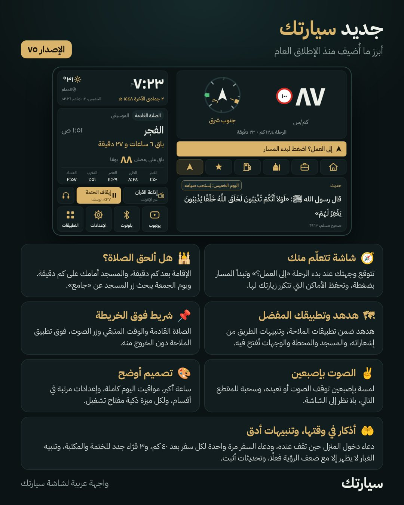

تطبيق سيارتك
واجهة عربية لشاشة سيارتك: المواقيت والأذان، ختمة القرآن، السرعة والقبلة، والملاحة بضغطة. مجاني.
تنزيل التطبيقافتح هذه الصفحة من متصفح شاشة السيارة نفسها
أنت تتصفح من الجوال. التطبيق للشاشة لا للجوال: افتح متصفح Chrome في شاشة سيارتك واكتب فيه
sayaratak.netlify.app
طريقة التثبيت على الشاشة
افتح Chrome في شاشة السيارة واكتب sayaratak.netlify.appالشاشة متصلة بالإنترنت (شبكة الجوال أو واي فاي)
اضغط «تنزيل التطبيق»، ثم افتح الملف بعد اكتمال التنزيل
إن طلب الإذن، اختر «الإعدادات» وفعّل «السماح من هذا المصدر» لـ Chrome، ثم ارجع واضغط «تثبيت»
ظهرت «تم حظر التطبيق لحماية جهازك»؟افتح Google Play ← صورة حسابك ← Play Protect ← الإعدادات ⚙ ← أوقف الفحص مؤقتًا، ثبّت التطبيق، ثم أعد تشغيل الحماية
افتح «سيارتك» واتبع خطوات البداية: إذن الموقع، والوصول إلى الإشعارات، وتثبيت التحديثاتبعدها يحدّث التطبيق نفسه وحده
الجديد
